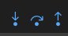
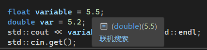
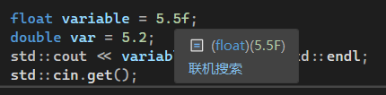

# Welcome to C++
C++ 融合了 3 种不同的编程方式：
- C 语言代表的过程性语言（procedural）
- C++ 在 C 语言基础上添加的类代表的面向对象语言（OOP，Object Oriented Programming）
- C++ 模板支持的泛型编程（generic programming）
IDE : Visual Studio
解决方案 /solution : 一个包含多个相关 project 的集合，这些 projects 可以是不同类型的（dll,exe,lib 等）。solution 就是一个工作台，而每个项目就是文件的集合，然后被编译成某种目标二进制文件，无论是库 (library) 还是可执行文件 (excutable)
使用 C++ 的最大原因在于直接控制硬件。用 C++ 写的代码，这些代码被送去编译器去编译，这些编译器将代码输出为目标平台的机器码。机器码是你的设备在 CPU 上实际执行的指令。使用 C++ 我们完全可以控制 CPU 执行的每一条指令。
C# 和 JAVA 与 C++ 不同，是因为它们运行在虚拟机上，这意味着代码首先被编译成一种中间语言，当在目标平台运行应用程序时，虚拟机在程序运行时再转换成机器码。
C++ 是本地语言（native language）。比如 x64 编译器将输出 x64 机器代码，从而（也只能）在 64 位的 CPU 上运行。 C++ 编译器为目标平台和架构生成机器码，编译后已经变成了平台上的机器语言，你只需要把机器代码指令放入 CPU，CPU 就会执行这些指令。
仅仅因为代码是本地的，并不意味着它会很快，垃圾代码甚至可能比虚拟机语言更慢比如 C# 或 JAVA，因为它们倾向于运行时做系统优化。
# How C++ Works
-
预处理：展开头文件、宏替换、去掉注释。
需要文件：.cpp 文件
生成产物：预处理文件 (以.i 结尾)
-
编译：检查语法，生成汇编代码。
需要文件：.i 文件
生成产物：汇编文件 (以.s 结尾)
-
汇编：把汇编代码转换为二进制的机器码。
需要文件：.s 文件
生成产物：机器码 (或称为 “目标代码”，以.obj 结尾)
-
链接：合成可执行的程序，并对声明，在其他目标文件找到对应的定义 (把编译过程中生成的所有对象文件链接起来，还会导入可能使用的其他库。)
需要文件：.obj 文件及各种动态库 (.so .dll) 或静态库 (.a .lib)
生成产物：可执行程序 (.exe)
- Compile（编译）：通常意味着对当前打开的文件中的代码进行编译。
- Build/Make（建立 / 生成）：通常意味着编译项目中所有源代码文件的代码。一个项目中只有一个文件被修改则只重新编译该文件。
- Build All：通常意味着重新编译所有的源代码文件。
- Link（链接）：将编译后的源代码和所需的库代码组合起来。
- Execute/Run：运行程序，如果没有执行前面的步骤，则会先执行前面的步骤。
- Debug：以步进方式执行程序。
- 编译器可能让选择调试版或者发布版，调试版包含额外的代码，提供详细的调试信息。
声明：这个符号、这个函数是存在的。
定义：这个函数到底是什么。
# How to DEBUG C++ in Visual Studio
berakpoints and reading memory
We can pause our program and just take a look at what is going on in its memory.Remember,the memory of a running program is pretty much all it’s got. It’s what every variable is set to. It’s what function will be called next.

- step into (逐语句) 会跳转进相应函数内
- step over (逐过程) 不会跳转
- step out (跳出)
# 头文件
-
C标准库和C++标准库的区别：有.h 后缀的是C标准库，C++标准库没有 -
头文件（Header Files）通常只包含声明，他们不定义如何实现的东西
-
header guard 文件保护符（防止头文件被包含多次）
-
#pragma once（常用） -
#ifndef#define// 头文件语句#endif
-
-
#include" "和#include< >-
一般来说，
#include <>的查找位置是标准库头文件所在目录，先去系统目录中找头文件，如果没有在到当前目录下找。#include<iostream> -
一般来说，
#include " "的查找位置是当前源文件所在目录，用于 include 自定义的头文件，让系统优先使用当前目录中定义的。#include"log.h"可以用 …/ 返回上一级目录（相对地址）
#include"../log.h"
-
# 处理数据
存储数据时的 3 种基本属性：
- 信息存储在何处
- 存储的值是多少
- 存储的信息是什么类型的
# 变量
变量允许我们命名我们存储在内存中的数据（data），继续使用它。当创建一个变量时它将被存储在内存中 —— 两个地方：堆和栈。
C++ 的关键字（保留字）完整介绍 | 菜鸟教程 (runoob.com)
在 C++ 中不同变量类型之间的唯一区别就是大小 size（这个变量会占用多少内存）。这实际上是这些原始数据类型之间的唯一区别。
数据类型的实际大小取决于编译器 —— 不同的编译器会有不同。由编译器确定类型的大小。
| 类型 | 位 | 范围 |
|---|---|---|
| char | 1 byte | -128 到 127 或者 0 到 255 |
| short (int) | 2 byte | -32768 到 32767 |
| int | 4 byte | -2147483648 到 2147483647 |
| long (int) | 4 byte | -2147483648 到 2147483647 |
| long long (int) | 8 byte | -9,223,372,036,854,775,808 到 9,223,372,036,854,775,807 |
| float | 4 byte | 精度型占 4 个字节（32 位）内存空间，+/- 3.4e +/- 38 (~7 个数字) |
| double | 8 byte | 双精度型占 8 个字节（64 位）内存空间，+/- 1.7e +/- 308 (~15 个数字) |
| long double | 16 byte | 长双精度型 16 个字节（128 位）内存空间，可提供 18-19 位有效数字。 |
| bool | 1 byte | 实际只占用 1bit（可以将 8 个 bools 存在一个 byte 里面，比如 bitset） |
-
一些基本类型可以使用一个或多个类型修饰符进行修饰：
- signed
- unsigned（可以将 unsigned 添加到上述常用 5 个类型的任何一个，它会移除符号位，可以设置一个更大的数字。）
- short
- long
-
float 和 double 定义：
有一个 f 在后面才声明这是一个浮点数：


- 操作符 sizeof，输出类型占用字节数，sizeof (bool) 就会打印出 1，表示 bool 占用一个字节。
- C++ 也允许定义各种其他类型的变量，比如枚举、指针、数组、引用、数据结构、类等等
# 常量
常量是固定值，在程序执行期间不会改变。这些固定的值，又叫做字面量。
常量可以是任何的基本数据类型，可分为整型数字、浮点数字、字符、字符串和布尔值。
常量就像是常规的变量，只不过常量的值在定义后不能进行修改。
-
整数常量
整数常量可以是十进制、八进制或十六进制的常量。前缀指定基数：0x 或 0X 表示十六进制，0 表示八进制，不带前缀则默认表示十进制。
整数常量也可以带一个后缀，后缀是 U 和 L 的组合，U 表示无符号整数（unsigned），L 表示长整数（long）。后缀可以是大写，也可以是小写，U 和 L 的顺序任意。
-
浮点常量
-
布尔常量
布尔常量共有两个，它们都是标准的 C++ 关键字：
- true 值代表真。
- false 值代表假。
-
字符常量
字符常量是括在单引号中。如果常量以 L（仅当大写时）开头，则表示它是一个宽字符常量（例如 L’x’），此时它必须存储在 wchar_t 类型的变量中。否则，它就是一个窄字符常量（例如 ‘x’），此时它可以存储在 char 类型的简单变量中。
字符常量可以是一个普通的字符（例如 ‘x’）、一个转义序列（例如 ‘\t’），或一个通用的字符（例如 ‘\u02C0’）。
在 C++ 中，有一些特定的字符，当它们前面有反斜杠时，它们就具有特殊的含义，被用来表示如换行符（\n）或制表符（\t）等。下表列出了一些这样的转义序列码：
转义序列 含义 \\ \ 字符 \’ ’ 字符 \" " 字符 ? ? 字符 \a 警报铃声 \b 退格键 \f 换页符 \n 换行符 \r 回车 \t 水平制表符 \v 垂直制表符 \ooo 一到三位的八进制数 \xhh . . . 一个或多个数字的十六进制数 -
字符串常量
字符串字面值或常量是括在双引号 “” 中的。一个字符串包含类似于字符常量的字符：普通的字符、转义序列和通用的字符。
您可以使用 ** 做分隔符，把一个很长的字符串常量进行分行。
定义常量
在 C++ 中，有两种简单的定义常量的方式：
- 使用 #define 预处理器。
- 使用 const 关键字。
# 左值和右值
C++ 中有两种类型的表达式：
- ** 左值（lvalue）：** 指向内存位置的表达式被称为左值（lvalue）表达式。左值可以出现在赋值号的左边或右边。
- ** 右值（rvalue）：** 术语右值（rvalue）指的是存储在内存中某些地址的数值。右值是不能对其进行赋值的表达式，也就是说，右值可以出现在赋值号的右边，但不能出现在赋值号的左边。
变量是左值，因此可以出现在赋值号的左边。数值型的字面值是右值，因此不能被赋值，不能出现在赋值号的左边。下面是一个有效的语句：
int g = 20; |
但是下面这个就不是一个有效的语句，会生成编译时错误：
10 = 20; |
# 类型限定符
类型限定符提供了变量的额外信息，用于在定义变量或函数时改变它们的默认行为的关键字。
| 限定符 | 含义 |
|---|---|
| const | const 定义常量，表示该变量的值不能被修改。。 |
| volatile | 修饰符 volatile 告诉该变量的值可能会被程序以外的因素改变，如硬件或其他线程。。 |
| restrict | 由 restrict 修饰的指针是唯一一种访问它所指向的对象的方式。只有 C99 增加了新的类型限定符 restrict。 |
| mutable | 表示类中的成员变量可以在 const 成员函数中被修改。 |
| static | 用于定义静态变量，表示该变量的作用域仅限于当前文件或当前函数内，不会被其他文件或函数访问。 |
| register | 用于定义寄存器变量，表示该变量被频繁使用，可以存储在 CPU 的寄存器中，以提高程序的运行效率。 |
# 存储类
存储类定义 C++ 程序中变量 / 函数的范围（可见性）和生命周期。这些说明符放置在它们所修饰的类型之前。下面列出 C++ 程序中可用的存储类：
- auto
- register
- static
- extern
- mutable
- thread_local (C++11)
从 C++ 17 开始，auto 关键字不再是 C++ 存储类说明符，且 register 关键字被弃用。
auto 存储类
自 C++ 11 以来，auto 关键字用于两种情况：声明变量时根据初始化表达式自动推断该变量的类型、声明函数时函数返回值的占位符。
C++ 98 标准中 auto 关键字用于自动变量的声明，但由于使用极少且多余，在 C++ 17 中已删除这一用法。
根据初始化表达式自动推断被声明的变量的类型，如：
auto f=3.14; //double | |
auto s("hello"); //const char* | |
auto z = new auto(9); // int* | |
auto x1 = 5, x2 = 5.0, x3='r';// 错误，必须是初始化为同一类型 |
register 存储类
register 存储类用于定义存储在寄存器中而不是 RAM 中的局部变量。这意味着变量的最大尺寸等于寄存器的大小（通常是一个词），且不能对它应用一元的 ‘&’ 运算符（因为它没有内存位置）。
{ | |
register int miles; | |
} |
寄存器只用于需要快速访问的变量，比如计数器。还应注意的是，定义 ‘register’ 并不意味着变量将被存储在寄存器中，它意味着变量可能存储在寄存器中，这取决于硬件和实现的限制。
static 存储类
static 存储类指示编译器在程序的生命周期内保持局部变量的存在，而不需要在每次它进入和离开作用域时进行创建和销毁。因此，使用 static 修饰局部变量可以在函数调用之间保持局部变量的值。
static 修饰符也可以应用于全局变量。当 static 修饰全局变量时，会使变量的作用域限制在声明它的文件内。
在 C++ 中，当 static 用在类数据成员上时，会导致仅有一个该成员的副本被类的所有对象共享。
#include <iostream> | |
// 函数声明 | |
void func(void); | |
static int count = 10; /* 全局变量 */ | |
int main() | |
{ | |
while(count--) | |
{ | |
func(); | |
} | |
return 0; | |
} | |
// 函数定义 | |
void func( void ) | |
{ | |
static int i = 5; // 局部静态变量 | |
i++; | |
std::cout << "变量 i 为 " << i ; | |
std::cout << " , 变量 count 为 " << count << std::endl; | |
} |
当上面的代码被编译和执行时，它会产生下列结果：
变量 i 为 6 , 变量 count 为 9 | |
变量 i 为 7 , 变量 count 为 8 | |
变量 i 为 8 , 变量 count 为 7 | |
变量 i 为 9 , 变量 count 为 6 | |
变量 i 为 10 , 变量 count 为 5 | |
变量 i 为 11 , 变量 count 为 4 | |
变量 i 为 12 , 变量 count 为 3 | |
变量 i 为 13 , 变量 count 为 2 | |
变量 i 为 14 , 变量 count 为 1 | |
变量 i 为 15 , 变量 count 为 0 |
extern 存储类
extern 存储类用于提供一个全局变量的引用，全局变量对所有的程序文件都是可见的。当您使用 ‘extern’ 时，对于无法初始化的变量，会把变量名指向一个之前定义过的存储位置。
当您有多个文件且定义了一个可以在其他文件中使用的全局变量或函数时，可以在其他文件中使用 extern 来得到已定义的变量或函数的引用。可以这么理解，extern 是用来在另一个文件中声明一个全局变量或函数。
extern 修饰符通常用于当有两个或多个文件共享相同的全局变量或函数的时候，如下所示：
第一个文件：main.cpp
#include <iostream> | |
int count ; | |
extern void write_extern(); | |
int main() | |
{ | |
count = 5; | |
write_extern(); | |
} |
第二个文件：support.cpp
#include <iostream> | |
extern int count; | |
void write_extern(void) | |
{ | |
std::cout << "Count is " << count << std::endl; | |
} |
在这里，第二个文件中的 extern 关键字用于声明已经在第一个文件 main.cpp 中定义的 count。现在 ，编译这两个文件，如下所示：
$ g++ main.cpp support.cpp -o write |
这会产生 write 可执行程序，尝试执行 write，它会产生下列结果：
$ ./write | |
Count is 5 |
mutable 存储类
mutable 说明符仅适用于类的对象，这将在本教程的最后进行讲解。它允许对象的成员替代常量。也就是说，mutable 成员可以通过 const 成员函数修改。
thread_local 存储类
使用 thread_local 说明符声明的变量仅可在它在其上创建的线程上访问。 变量在创建线程时创建，并在销毁线程时销毁。 每个线程都有其自己的变量副本。
thread_local 说明符可以与 static 或 extern 合并。
可以将 thread_local 仅应用于数据声明和定义，thread_local 不能用于函数声明或定义。
以下演示了可以被声明为 thread_local 的变量：
thread_local int x; // 命名空间下的全局变量 | |
class X | |
{ | |
static thread_local std::string s; // 类的 static 成员变量 | |
}; | |
static thread_local std::string X::s; // X::s 是需要定义的 | |
void foo() | |
{ | |
thread_local std::vector<int> v; // 本地变量 | |
} |
# 复合类型
# 数组（array）
存储一个固定大小的相同类型元素的顺序集合。
# 字符串（string）
字符串实际上是使用 null 字符 \0 终止的一维字符数组。
C++ 提供了以下两种类型的字符串表示形式：
- C-style 字符串
#include <cstring> - C++ 引入的 string 类类型
#include <string>
# 结构体（struct）
存储不同的数据类型。（int, float 和 double）
struct inflatable | |
{ | |
char name[20]; | |
float volume; | |
double price; | |
}; |
# 共用体（union）
存储不同的数据类型，但只能同时存储一种。（int 或 float 或 double）
union one4all | |
{ | |
int int_val; | |
long long_val; | |
double double_val; | |
}; |
# 枚举（enum）
枚举类型 (enumeration) 是 C++ 中的一种派生数据类型，它是由用户定义的若干枚举常量的集合。
如果一个变量只有几种可能的值，可以定义为枚举 (enumeration) 类型。所谓 "枚举" 是指将变量的值一一列举出来，变量的值只能在列举出来的值的范围内。
创建枚举，需要使用关键字 enum。枚举类型的一般形式为：
enum 枚举名{ | |
标识符[=整型常数], | |
标识符[=整型常数], | |
... | |
标识符[=整型常数] | |
} 枚举变量; |
如果枚举没有初始化，即省掉 "= 整型常数" 时，则从第一个标识符开始。
例如，下面的代码定义了一个颜色枚举，变量 c 的类型为 color。最后，c 被赋值为 “blue”。
enum color { red, green, blue } c; | |
c = blue; |
默认情况下，第一个名称的值为 0，第二个名称的值为 1，第三个名称的值为 2，以此类推。但是，您也可以给名称赋予一个特殊的值，只需要添加一个初始值即可。例如，在下面的枚举中，green 的值为 5。
enum color { red, green=5, blue };
在这里，blue 的值为 6，因为默认情况下，每个名称都会比它前面一个名称大 1，但 red 的值依然为 0。
# 指针
指针（Pointers）对管理和操作内存至关重要，因为我们在代码中做的每件事，都是从内存中读取或者写入内存。
&地址运算符：作用于变量，获得变量地址。*解除引用运算符 / 间接值运算符：作用于指针，获取该地址处存储的值。
指针是一个变量，其值为另一个变量的地址，即，内存位置的直接地址。就像其他变量或常量一样，必须在使用指针存储其他变量地址之前，对其进行声明。
#include <iostream> | |
using namespace std; | |
int main () | |
{ | |
int var = 20; // 实际变量的声明 | |
int *ip; // 指针变量的声明 | |
ip = &var; // 在指针变量中存储 var 的地址 | |
cout << "Value of var variable: "; | |
cout << var << endl; | |
// 输出在指针变量中存储的地址 | |
cout << "Address stored in ip variable: "; | |
cout << ip << endl; | |
// 访问指针中地址的值，通过使用一元运算符 * 来返回位于操作数所指定地址的变量的值。 | |
cout << "Value of *ip variable: "; | |
cout << *ip << endl; | |
return 0; | |
} | |
// 输出: | |
Value of var variable: 20 | |
Address stored in ip variable: 0xbfc601ac | |
Value of *ip variable: 20 |
# new
int *pn = new int; 运算符 new 根据类型来确定需要多少字节的内存，然后找到这样的内存并返回其地址。然后将地址赋给 pn ， pn 是被声明为指向 int 的指针。
常规变量声明分配在栈（stack）的内存区域中；而 new 分配在堆（heap）或自由存储区（free store）
# delete
一定要配对的使用 new 和 delete ，否则将发生内存泄漏（memory leak）
int *p = new int; //allocate memory with new | |
... //use the memory | |
delete p; //free memory with delete when done | |
// 使用 new 创建动态数组 | |
int *ps = new int [10]; //get a block of 10 ints | |
delete [] ps; //free a ddynamic array |
# 指针与数组
C++ 将数组名解释为数组第一个元素的地址
double wages[3] = {1000.0, 2000.0, 3000.0}; | |
double *p = wages; | |
//wages = &wages[0] = address of first element of array |
# 引用
引用（References）和指针的不同：
- 不存在空引用。引用必须连接到一块合法的内存。
- 一旦引用被初始化为一个对象，就不能被指向到另一个对象。指针可以在任何时候指向到另一个对象。
- 引用必须在创建时被初始化。指针可以在任何时间被初始化。
引用只是其他变量的一个别名（alias）
引用只在定义时绑定，如果在定义后将变量赋值给引用，则不会重新绑定，而只是赋值。
#include <iostream> | |
using namespace std; | |
int main () | |
{ | |
// 声明简单的变量 | |
int i; | |
double d; | |
// 声明引用变量 | |
int& r = i; | |
double& s = d; | |
i = 5; | |
cout << "Value of i : " << i << endl; | |
cout << "Value of i reference : " << r << endl; | |
d = 11.7; | |
cout << "Value of d : " << d << endl; | |
cout << "Value of d reference : " << s << endl; | |
return 0; | |
} | |
// 输出 | |
Value of i : 5 | |
Value of i reference : 5 | |
Value of d : 11.7 | |
Value of d reference : 11.7 |
用指针来实现引用调用函数
void Increment(int* value) | |
{ | |
(*value)++; | |
} | |
int main() | |
{ | |
int a = 5; | |
Increment(&a); | |
cout<<a<<endl; | |
cin.get(); | |
return 0; | |
} |
用引用来实现引用调用函数。通过使用引用来替代指针，会使 C++ 程序更容易阅读和维护。
void Increment(int& value) | |
{ | |
value++; | |
} | |
int main() | |
{ | |
int a = 5; | |
Increment(a); | |
cout<<a<<endl; | |
cin.get(); | |
return 0; | |
} |
把引用作为返回值
#include <iostream> | |
using namespace std; | |
double vals[] = {10.1, 12.6, 33.1, 24.1, 50.0}; | |
double& setValues(int i) { | |
double& ref = vals[i]; | |
return ref; // 返回第 i 个元素的引用，ref 是一个引用变量，ref 引用 vals [i] | |
} | |
// 要调用上面定义函数的主函数 | |
int main () | |
{ | |
cout << "改变前的值" << endl; | |
for ( int i = 0; i < 5; i++ ) | |
{ | |
cout << "vals[" << i << "] = "; | |
cout << vals[i] << endl; | |
} | |
setValues(1) = 20.23; // 改变第 2 个元素 | |
setValues(3) = 70.8; // 改变第 4 个元素 | |
cout << "改变后的值" << endl; | |
for ( int i = 0; i < 5; i++ ) | |
{ | |
cout << "vals[" << i << "] = "; | |
cout << vals[i] << endl; | |
} | |
return 0; | |
} |
# 循环语句
Loops in C++
-
whlie 循环
当给定条件为真时，重复语句或语句组。它会在执行循环主体之前测试条件。
while(condition)
{statement(s);
} -
for 循环
for 循环允许编写一个执行特定次数的循环的重复控制结构。
for ( init; condition; increment )
{statement(s);
} -
do…while… 循环
除了它是在循环主体结尾测试条件外，其他与 while 语句类似，但是 do…while 循环会确保至少执行一次循环。
do{statement(s);
}while( condition );
# 判断语句
Conditions and Branches in C++
-
if…else…
if(boolean_expression)
{// 如果布尔表达式为真将执行的语句}else{// 如果布尔表达式为假将执行的语句} -
switch
switch(expression){
case constant-expression :
statement(s);
break; // 可选的
case constant-expression :
statement(s);
break; // 可选的
// 可以有任意数量的 case 语句default : // 可选的
statement(s);
} -
条件运算符？:
可以用来替代 if…else 语句
if(y < 10){
var = 30;
}else{
var = 40;
}// 条件运算符形式var = (y < 10) ? 30 : 40;
控制流 (Control Flow in C++)
-
break
当 break 语句出现在一个循环内时，循环会立即终止，且程序流将继续执行紧接着循环的下一条语句。如果您使用的是嵌套循环（即一个循环内嵌套另一个循环），break 语句会停止执行最内层的循环，然后开始执行该块之后的下一行代码。它也可用于终止 switch 语句中的一个 case。
-
continue
continue 会跳过当前循环中的代码，强迫开始下一次循环。
对于 for 循环，continue 语句会导致执行条件测试和循环增量部分。对于 while 和 do…while 循环，continue 语句会导致程序控制回到条件测试上。
-
return
没必要在循环内使用，可在代码内任何位置使用，return 之后的语句都不会执行。
# 函数
函数（Functions）是一组一起执行一个任务的语句。每个 C++ 程序都至少有一个函数，即主函数 main()
应当需要一点经验来意识到什么时候需要一个函数，如果正在多次做一个常见的任务，那么为他创建一个函数。
函数的主要目的是防止代码重复，我们不希望只是到处复制和粘贴代码。
函数就是我们写的代码块，被设计为用来执行特定的任务。在 class 中这些代码块则被称为方法 method。这里所说函数单独指类外的。
每次调用函数，编译器生成一个 call 指令（类外的，因此没有什么动态绑定，也暂时不考虑内联）。这基本上意义着，在一个运行的程序中，为了调用一个函数，我们需要创建一个堆栈结构，这意味着我们必须把像参数这样的东西推进堆栈。我们还需要一个叫做返回地址的东西压入堆栈。然后我们要做的是跳到二进制执行文件的不同部分，以便开始执行我们的函数指令。
为了将 push 进去的结果返回，然后我们得回去到最初调用函数之前。跳跃和执行这些都需要时间，所以它会减慢我们的程序。
而对于 main 函数，返回值是 int，并且只有 main 函数可以不 return—— 它会自动假设返回 0.（这是现代 C 和 C++ 的一个特性）
定义函数
C++ 中的函数定义的一般形式如下：
return_type function_name( parameter list )
在 C++ 中，函数由一个函数头和一个函数主体组成。下面列出一个函数的所有组成部分：
- 返回类型：一个函数可以返回一个值。return_type 是函数返回的值的数据类型。有些函数执行所需的操作而不返回值，在这种情况下，return_type 是关键字 void。
- 函数名称：这是函数的实际名称。函数名和参数列表一起构成了函数签名。
- 参数：参数就像是占位符。当函数被调用时，您向参数传递一个值，这个值被称为实际参数。参数列表包括函数参数的类型、顺序、数量。参数是可选的，也就是说，函数可能不包含参数。
- 函数主体：函数主体包含一组定义函数执行任务的语句。
函数参数
如果函数要使用参数，则必须声明接受参数值的变量。这些变量称为函数的形式参数。
形式参数就像函数内的其他局部变量，在进入函数时被创建，退出函数时被销毁。
当调用函数时，有三种向函数传递参数的方式：
| 调用类型 | 描述 |
|---|---|
| 传值调用 | 该方法把参数的实际值赋值给函数的形式参数。在这种情况下，修改函数内的形式参数对实际参数没有影响。 |
| 指针调用 | 该方法把参数的地址赋值给形式参数。在函数内，该地址用于访问调用中要用到的实际参数。这意味着，修改形式参数会影响实际参数。 |
| 引用调用 | 该方法把参数的引用赋值给形式参数。在函数内，该引用用于访问调用中要用到的实际参数。这意味着，修改形式参数会影响实际参数。 |
默认情况下，C++ 使用传值调用来传递参数。一般来说，这意味着函数内的代码不能改变用于调用函数的参数。
Lambda 函数与表达式
# 类 & 对象
类用于指定对象的形式，它包含了数据表示法和用于处理数据的方法。
C++ 类定义

#include <iostream> | |
using namespace std; | |
class Box | |
{ | |
public: | |
double length; // 长度 | |
double breadth; // 宽度 | |
double height; // 高度 | |
// 成员函数声明 | |
double get(void); | |
void set( double len, double bre, double hei ); | |
}; | |
// 成员函数定义 | |
double Box::get(void) | |
{ | |
return length * breadth * height; | |
} | |
void Box::set( double len, double bre, double hei) | |
{ | |
length = len; | |
breadth = bre; | |
height = hei; | |
} | |
int main( ) | |
{ | |
Box Box1; // 声明 Box1，类型为 Box | |
Box Box2; // 声明 Box2，类型为 Box | |
Box Box3; // 声明 Box3，类型为 Box | |
double volume = 0.0; // 用于存储体积 | |
//box 1 详述 | |
Box1.height = 5.0; | |
Box1.length = 6.0; | |
Box1.breadth = 7.0; | |
//box 2 详述 | |
Box2.height = 10.0; | |
Box2.length = 12.0; | |
Box2.breadth = 13.0; | |
//box 1 的体积 | |
volume = Box1.height * Box1.length * Box1.breadth; | |
cout << "Box1 的体积：" << volume <<endl; | |
//box 2 的体积 | |
volume = Box2.height * Box2.length * Box2.breadth; | |
cout << "Box2 的体积：" << volume <<endl; | |
//box 3 详述 | |
Box3.set(16.0, 8.0, 12.0); | |
volume = Box3.get(); | |
cout << "Box3 的体积：" << volume <<endl; | |
return 0; | |
} |
| 类成员函数 | 类的成员函数是指那些把定义和原型写在类定义内部的函数，就像类定义中的其他变量一样。 |
|---|---|
| 类访问修饰符 | 类成员可以被定义为 public、private 或 protected。默认情况下是定义为 private。 |
| 构造函数 & 析构函数 | 类的构造函数是一种特殊的函数，在创建一个新的对象时调用。类的析构函数也是一种特殊的函数，在删除所创建的对象时调用。 |
| C++ 拷贝构造函数 | 拷贝构造函数，是一种特殊的构造函数，它在创建对象时，是使用同一类中之前创建的对象来初始化新创建的对象。 |
| C++ 友元函数 | 友元函数可以访问类的 private 和 protected 成员。 |
| C++ 内联函数 | 通过内联函数，编译器试图在调用函数的地方扩展函数体中的代码。 |
| C++ 中的 this 指针 | 每个对象都有一个特殊的指针 this，它指向对象本身。 |
| C++ 中指向类的指针 | 指向类的指针方式如同指向结构的指针。实际上，类可以看成是一个带有函数的结构。 |
| C++ 类的静态成员 | 类的数据成员和函数成员都可以被声明为静态的。 |
# 继承
继承允许我们依据另一个类来定义一个类，这使得创建和维护一个应用程序变得更容易。这样做，也达到了重用代码功能和提高执行效率的效果。
当创建一个类时，您不需要重新编写新的数据成员和成员函数，只需指定新建的类继承了一个已有的类的成员即可。这个已有的类称为基类，新建的类称为派生类。

// 基类 | |
class Animal { | |
//eat () 函数 | |
//sleep () 函数 | |
}; | |
// 派生类 | |
class Dog : public Animal { | |
//bark () 函数 | |
}; |
一个类可以派生自多个类，这意味着，它可以从多个基类继承数据和函数。定义一个派生类，我们使用一个类派生列表来指定基类。类派生列表以一个或多个基类命名，形式如下：
class derived-class: access-specifier base-class |
其中，访问修饰符 access-specifier 是 public、protected 或 private 其中的一个，base-class 是之前定义过的某个类的名称。如果未使用访问修饰符 access-specifier，则默认为 private。
举例
#include <iostream> | |
using namespace std; | |
// 基类 | |
class Shape | |
{ | |
public: | |
void setWidth(int w) | |
{ | |
width = w; | |
} | |
void setHeight(int h) | |
{ | |
height = h; | |
} | |
protected: | |
int width; | |
int height; | |
}; | |
// 派生类 | |
class Rectangle: public Shape | |
{ | |
public: | |
int getArea() | |
{ | |
return (width * height); | |
} | |
}; | |
int main(void) | |
{ | |
Rectangle Rect; | |
Rect.setWidth(5); | |
Rect.setHeight(7); | |
// 输出对象的面积 | |
cout << "Total area: " << Rect.getArea() << endl; | |
return 0; | |
} | |
//Total area: 35 |
# 访问控制和继承
派生类可以访问基类中所有的非私有成员。因此基类成员如果不想被派生类的成员函数访问，则应在基类中声明为 private。
我们可以根据访问权限总结出不同的访问类型，如下所示：
| 访问 | public | protected | private |
|---|---|---|---|
| 同一个类 | yes | yes | yes |
| 派生类 | yes | yes | no |
| 外部的类 | yes | no | no |
一个派生类继承了所有的基类方法，但下列情况除外：
- 基类的构造函数、析构函数和拷贝构造函数。
- 基类的重载运算符。
- 基类的友元函数。
继承类型
当一个类派生自基类，该基类可以被继承为 public、protected 或 private 几种类型。继承类型是通过上面讲解的访问修饰符 access-specifier 来指定的。
我们几乎不使用 protected 或 private 继承，通常使用 public 继承。当使用不同类型的继承时，遵循以下几个规则：
- 公有继承（public）：当一个类派生自公有基类时，基类的公有成员也是派生类的公有成员，基类的保护成员也是派生类的保护成员，基类的私有成员不能直接被派生类访问，但是可以通过调用基类的公有和保护成员来访问。
- 保护继承（protected）： 当一个类派生自保护基类时，基类的公有和保护成员将成为派生类的保护成员。
- 私有继承（private）：当一个类派生自私有基类时，基类的公有和保护成员将成为派生类的私有成员。
# 多继承
多继承即一个子类可以有多个父类，它继承了多个父类的特性。
C++ 类可以从多个类继承成员，语法如下：
class <派生类名>:<继承方式1><基类名1>,<继承方式2><基类名2>,… | |
{ | |
<派生类类体> | |
}; |
实例
#include <iostream> | |
using namespace std; | |
// 基类 Shape | |
class Shape | |
{ | |
public: | |
void setWidth(int w) | |
{ | |
width = w; | |
} | |
void setHeight(int h) | |
{ | |
height = h; | |
} | |
protected: | |
int width; | |
int height; | |
}; | |
// 基类 PaintCost | |
class PaintCost | |
{ | |
public: | |
int getCost(int area) | |
{ | |
return area * 70; | |
} | |
}; | |
// 派生类 | |
class Rectangle: public Shape, public PaintCost | |
{ | |
public: | |
int getArea() | |
{ | |
return (width * height); | |
} | |
}; | |
int main(void) | |
{ | |
Rectangle Rect; | |
int area; | |
Rect.setWidth(5); | |
Rect.setHeight(7); | |
area = Rect.getArea(); | |
// 输出对象的面积 | |
cout << "Total area: " << Rect.getArea() << endl; | |
// 输出总花费 | |
cout << "Total paint cost: $" << Rect.getCost(area) << endl; | |
return 0; | |
} | |
//Total area: 35 | |
//Total paint cost: $2450 |
# 重载
C++ 允许在同一作用域中的某个函数和运算符指定多个定义，分别称为函数重载和运算符重载。
重载声明是指一个与之前已经在该作用域内声明过的函数或方法具有相同名称的声明，但是它们的参数列表和定义（实现）不相同。
当您调用一个重载函数或重载运算符时，编译器通过把您所使用的参数类型与定义中的参数类型进行比较，决定选用最合适的定义。
# C++ 中的函数重载
在同一个作用域内，可以声明几个功能类似的同名函数，但是这些同名函数的形式参数（指参数的个数、类型或者顺序）必须不同。您不能仅通过返回类型的不同来重载函数。
#include <iostream> | |
using namespace std; | |
class printData | |
{ | |
public: | |
void print(int i) { | |
cout << "整数为: " << i << endl; | |
} | |
void print(double f) { | |
cout << "浮点数为: " << f << endl; | |
} | |
void print(char c[]) { | |
cout << "字符串为: " << c << endl; | |
} | |
}; | |
int main(void) | |
{ | |
printData pd; | |
// 输出整数 | |
pd.print(5); | |
// 输出浮点数 | |
pd.print(500.263); | |
// 输出字符串 | |
char c[] = "Hello C++"; | |
pd.print(c); | |
return 0; | |
} | |
// 整数为: 5 | |
// 浮点数为: 500.263 | |
// 字符串为: Hello C++ |
# C++ 中的运算符重载
重载的运算符是带有特殊名称的函数，函数名是由关键字 operator 和其后要重载的运算符符号构成的。与其他函数一样，重载运算符有一个返回类型和一个参数列表。
声明加法运算符用于把两个 Box 对象相加，返回最终的 Box 对象。
Box operator+(const Box&);// 类的成员函数 | |
Box operator+(const Box&, const Box&);// 普通非成员函数 |
实例
#include <iostream> | |
using namespace std; | |
class Box | |
{ | |
public: | |
double getVolume(void) | |
{ | |
return length * breadth * height; | |
} | |
void setLength( double len ) | |
{ | |
length = len; | |
} | |
void setBreadth( double bre ) | |
{ | |
breadth = bre; | |
} | |
void setHeight( double hei ) | |
{ | |
height = hei; | |
} | |
// 重载 + 运算符，用于把两个 Box 对象相加 | |
Box operator+(const Box& b) | |
{ | |
Box box; | |
box.length = this->length + b.length; | |
box.breadth = this->breadth + b.breadth; | |
box.height = this->height + b.height; | |
return box; | |
} | |
private: | |
double length; // 长度 | |
double breadth; // 宽度 | |
double height; // 高度 | |
}; | |
// 程序的主函数 | |
int main( ) | |
{ | |
Box Box1; // 声明 Box1，类型为 Box | |
Box Box2; // 声明 Box2，类型为 Box | |
Box Box3; // 声明 Box3，类型为 Box | |
double volume = 0.0; // 把体积存储在该变量中 | |
// Box1 详述 | |
Box1.setLength(6.0); | |
Box1.setBreadth(7.0); | |
Box1.setHeight(5.0); | |
// Box2 详述 | |
Box2.setLength(12.0); | |
Box2.setBreadth(13.0); | |
Box2.setHeight(10.0); | |
// Box1 的体积 | |
volume = Box1.getVolume(); | |
cout << "Volume of Box1 : " << volume <<endl; | |
// Box2 的体积 | |
volume = Box2.getVolume(); | |
cout << "Volume of Box2 : " << volume <<endl; | |
// 把两个对象相加，得到 Box3 | |
Box3 = Box1 + Box2; | |
// Box3 的体积 | |
volume = Box3.getVolume(); | |
cout << "Volume of Box3 : " << volume <<endl; | |
return 0; | |
} | |
//Volume of Box1 : 210 | |
//Volume of Box2 : 1560 | |
//Volume of Box3 : 5400 |
# 可重载运算符 / 不可重载运算符
下面是可重载的运算符列表：
| 双目算术运算符 | + (加)，-(减)，*(乘)，/(除)，% (取模) |
|---|---|
| 关系运算符 | ==(等于)，!= (不等于)，< (小于)，> (大于)，<=(小于等于)，>=(大于等于) |
| 逻辑运算符 | ||(逻辑或)，&&(逻辑与)，!(逻辑非) |
| 单目运算符 | + (正)，-(负)，*(指针)，&(取地址) |
| 自增自减运算符 | ++(自增)，–(自减) |
| 位运算符 | | (按位或)，& (按位与)，~(按位取反)，^(按位异或),，<< (左移)，>>(右移) |
| 赋值运算符 | =, +=, -=, *=, /= , % = , &=, |=, ^=, <<=, >>= |
| 空间申请与释放 | new, delete, new[ ] , delete[] |
| 其他运算符 | ()(函数调用)，->(成员访问)，,(逗号)，[](下标) |
下面是不可重载的运算符列表：
- .：成员访问运算符
- .*, ->*：成员指针访问运算符
- ::：域运算符
- sizeof：长度运算符
- ?:：条件运算符
- #： 预处理符号
# C++ 多态
多态按字面的意思就是多种形态。当类之间存在层次结构，并且类之间是通过继承关联时，就会用到多态。
C++ 多态意味着调用成员函数时，会根据调用函数的对象的类型来执行不同的函数。
实例
#include <iostream> | |
using namespace std; | |
class Shape | |
{ | |
protected: | |
int width, height; | |
public: | |
Shape( int a=0 ,int b=0 ) | |
{ | |
width = a; | |
height = b; | |
} | |
int area() | |
{ | |
cout << "Parent class area :"<<endl; | |
return 0; | |
} | |
}; | |
class Rectangle: public Shape | |
{ | |
public: | |
Rectangle( int a=0, int b=0):Shape(a, b){ } | |
int area () | |
{ | |
cout<< "Retangle class area:"<<endl; | |
return (width * height); | |
} | |
}; | |
class Triangle: public Shape | |
{ | |
public: | |
Triangle(int a=0, int b=0):Shape(a, b){} | |
int area() | |
{ | |
cout << "Triangle class area: "<<endl; | |
return (width * height / 2); | |
} | |
}; | |
int main() | |
{ | |
Shape *shape; | |
Rectangle rec(10, 7); | |
Triangle tri(10, 5); | |
// 存储矩形的地址 | |
shape = &rec; | |
// 调用矩形的求面积函数 area | |
shape ->area(); | |
shape = &tri; | |
shape->area(); | |
return 0; | |
} |
Parent class area : | |
Parent class area : |
导致错误输出的原因是，调用函数 area () 被编译器设置为基类中的版本，这就是所谓的静态多态，或静态链接。函数调用在程序执行前就准备好了。有时候这也被称为早绑定，因为 area () 函数在程序编译期间就已经设置好了。
但现在，让我们对程序稍作修改，在 Shape 类中，area () 的声明前放置关键字 virtual
class Shape { | |
protected: | |
int width, height; | |
public: | |
Shape( int a=0, int b=0) | |
{ | |
width = a; | |
height = b; | |
} | |
virtual int area() | |
{ | |
cout << "Parent class area :" <<endl; | |
return 0; | |
} | |
}; |
Rectangle class area : | |
Triangle class area : |
此时，编译器看的是指针的内容，而不是它的类型。因此，由于 tri 和 rec 类的对象的地址存储在 *shape 中，所以会调用各自的 area () 函数。
正如您所看到的，每个子类都有一个函数 area () 的独立实现。这就是多态的一般使用方式。有了多态，您可以有多个不同的类，都带有同一个名称但具有不同实现的函数，函数的参数甚至可以是相同的。
# 虚函数
虚函数 是在基类中使用关键字 virtual 声明的函数。在派生类中重新定义基类中定义的虚函数时，会告诉编译器不要静态链接到该函数。
我们想要的是在程序中任意点可以根据所调用的对象类型来选择调用的函数，这种操作被称为动态链接，或后期绑定。
# 纯虚函数
您可能想要在基类中定义虚函数，以便在派生类中重新定义该函数更好地适用于对象，但是您在基类中又不能对虚函数给出有意义的实现，这个时候就会用到纯虚函数。
我们可以把基类中的虚函数 area () 改写如下：
class Shape { | |
protected: | |
int width, height; | |
public: | |
Shape( int a=0, int b=0) | |
{ | |
width = a; | |
height = b; | |
} | |
// pure virtual function | |
virtual int area() = 0; | |
}; |
= 0 告诉编译器，函数没有主体，上面的虚函数是纯虚函数。